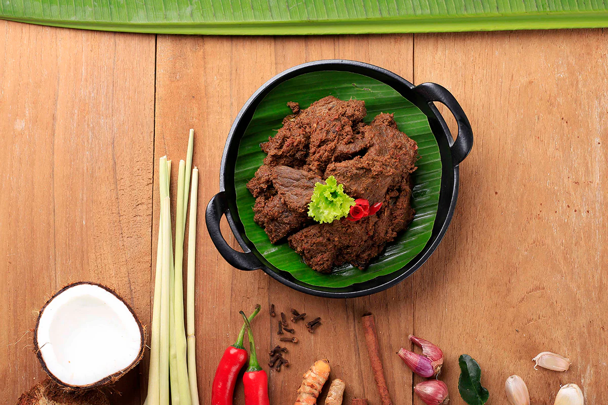

Malaysia's Food: Library
Malaysia, located in Southeast Asia, is renowned for its rich cultural heritage,
involved Malay, Chinese, Indian, and indigenous influences.
This diversity is reflected in its festivals, cuisine, and traditions, making Malaysia a captivating destination for cultural exploration.

Indian Food
FMT - 06 Apr 2023, 07:30 AM
Malaysia Background
The country is made up of an ethnic split of Malays (53%),
Chinese (20%) and Indian (6%) but also contains smaller
numbers of Thai, Indonesian, Vietnamese and Cambodian ethnicities. These distinct influences play
their own parts.
Malay Traditional Food

1. Nasi Lemak
Nasi lemak is often referred to as Malaysia’s unofficial national dish.
Basically, it’s rice cooked in coconut milk. But it’s the sides that matter.
Depending on where you are in Malaysia, it comes with a variety of accompaniments such as hard-boiled egg, peanuts, vegetables, lamb/chicken/or beef curry, seafood and sambal (chili-based sauce).
Nasi lemak is traditionally eaten for breakfast but these days people are ordering it any time of day.

2.Rendang(ayam,daging,lembu)
Rendang is a traditional Indonesian and Malaysian dish that is rich in flavor and history. It is a slow-cooked curry-like dish, typically made with beef (although other meats like chicken or lamb can also be used) and a rich blend of spices, coconut milk, and other ingredients. The dish is known for its tender, flavorful meat and complex, aromatic sauce.
Rendang is often considered a ceremonial dish in Indonesian and Malaysian cultures, served during special occasions such as weddings, celebrations, and festivals. It is also a popular dish in Indonesian and Malaysian cuisine, loved for its bold flavors and comforting qualities.
The cooking process for rendang is labor-intensive but results in a dish that is truly unique and delicious. The meat is simmered in the spice mixture for hours, allowing the flavors to meld together and the sauce to thicken. The result is a dish that is tender, flavorful, and deeply satisfying.
Chinese Traditional Food
Chinese culture has a rich history tracing back thousands of years.
With an ever-evolving ethos, Chinese civilization has been at the forefront of its time, revolutionizing in areas of ceramics, architecture, music, literature, martial arts, visual arts, philosophy, and religion.
Yet, there is one area that stands apart.
Chinese cuisine has innovated in the culinary world for centuries.
Chinese restaurants, and their chefs, continue to inspire, creating magnificent dishes that are tasted around the world.
Here, we pay homage to Chinese culinary cuisine, sharing 10 of the most popular dishes in China, that must be experienced in time for this upcoming Chinese New Year.

Bak Kut Teh
Bak Kut Teh is a popular dish in Malaysia, known for its flavorful pork rib soup.
The name translates to "meat bone tea," as it is traditionally served with Chinese tea.
The dish features pork ribs simmered in a broth of herbs and spices, such as garlic, star anise, and cinnamon, resulting in tender, savory meat with a fragrant, aromatic broth.
Bak Kut Teh is often enjoyed with steamed rice and condiments like chili and soy sauce, making it a comforting and satisfying meal.

Xiao Long Bao
Xiaolongbao are small, steamed dumplings from China, often associated with Shanghai. They're famous for their thin, delicate skin and juicy filling. Inside each dumpling is a flavorful broth, along with minced pork or other fillings.
To make xiaolongbao, chefs wrap the dough around the filling and pleat it at the top to seal everything inside. When steamed, the broth turns into a delicious soup that bursts out when you bite into the dumpling.
These dumplings are usually served hot and are enjoyed with a dipping sauce made from black vinegar and shredded ginger. Eating xiaolongbao is a delightful experience, but be careful as the hot soup inside can spill out if you're not careful!

Chicken Rice
As known as Hainanese Chicken rice is a chicken and rice dish of lightly poached chicken, served alongside rice that’s been cooked in the poaching liquid, with ginger-garlic chilli sauce and soup made from the poaching liquid.
It is one of our most beloved local dishes, alongside the chilli crab, laksa and beef rendang. Hit any hawker centre or food court in Singapore and Malaysia, and you are going to find chicken rice, whether that’s today’s Hainanese chicken rice or the Malay Nasi Ayam with fried or grilled chicken.
Indian Traditional Food
Traditional Indian food is renowned worldwide for its wonderful use of herbs and spices,
and its diverse range of deep-fried snacks, pastries, curries, gravies, sauces, rice dishes, tandoor-cooked meats, vegetable dishes, chutneys, breads and sweets.
1. Biryani Rice
Biryani is a popular rice dish from the Indian subcontinent, known for its rich flavors and aromatic spices. It typically consists of long-grain basmati rice cooked with meat (such as chicken, mutton, or beef), vegetables, or both. The dish is layered and cooked together with a blend of spices, including cumin, coriander, turmeric, and garam masala, among others. Biryani is often served at special occasions and is loved for its delicious taste and satisfying texture.
2.Curry
Curry is a flavorful and aromatic dish that originated in South Asia but has become popular worldwide. It consists of a variety of spices, herbs, and ingredients, such as meat, vegetables, or lentils, cooked in a sauce.
The sauce is typically made by sautéing onions, garlic, and ginger with a blend of spices like turmeric, cumin, coriander, and chili powder. This mixture is then combined with tomatoes, coconut milk, or yogurt to create a rich and creamy sauce.
Curry can be made with a wide range of ingredients, making it a versatile dish. It can be spicy or mild, depending on the blend of spices used. Curry is often served with rice or bread and is enjoyed for its bold flavors and comforting qualities.